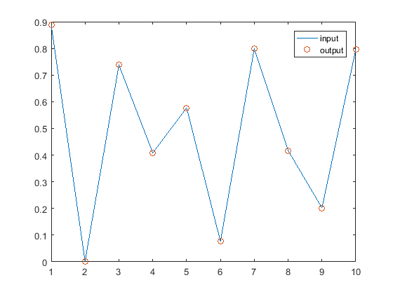
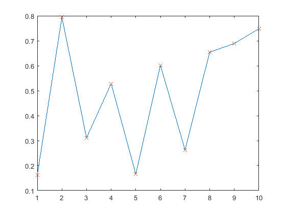

function template_carnot_m_function (this line is the title and it appears with 'lookfor')
Contents
Function Call
tsn = template_carnot_m_function(ts)
Inputs
ts - timeseries to be modified
Outputs
tsn - new timeseries
Description
This is a template for Matlab functions in the Carnot toolbox. Carnot model and function m-files should use a name which gives a hint to the model of function (avoid names like testfunction1.m). Using to the Matlab 'publish' function it creates a (more or less) readable html file.
References and Literature
- Matlab for Dummies
- Pirsig: Zen oder die Kunst ein Motorrad zu warten (1978)
Function is used by: nn.m, function calls: cc.m see also template_verify_mFunction, template_verify_SimulinkBlock
Calculations
This is a very complex function ;-) The following table explains the calculation method.
| Input | Outut |
| Timeseries | =Input |
Plot of Input and Output

Figure: Original input (source: unknown)
Plot options
An other way to evaluate plots during publish. (publish option "evaluate code" must be true)
Figure: Current input (source: your computer)
Copyright and Versions
This file is part of the CARNOT Blockset. Copyright (c) 1998-2015, Solar-Institute Juelich of the FH Aachen. Additional Copyright for this file see list auf authors. All rights reserved. Redistribution and use in source and binary forms, with or without modification, are permitted provided that the following conditions are met: 1. Redistributions of source code must retain the above copyright notice, this list of conditions and the following disclaimer. 2. Redistributions in binary form must reproduce the above copyright notice, this list of conditions and the following disclaimer in the documentation and/or other materials provided with the distribution. 3. Neither the name of the copyright holder nor the names of its contributors may be used to endorse or promote products derived from this software without specific prior written permission. THIS SOFTWARE IS PROVIDED BY THE COPYRIGHT HOLDERS AND CONTRIBUTORS "AS IS" AND ANY EXPRESS OR IMPLIED WARRANTIES, INCLUDING, BUT NOT LIMITED TO, THE IMPLIED WARRANTIES OF MERCHANTABILITY AND FITNESS FOR A PARTICULAR PURPOSE ARE DISCLAIMED. IN NO EVENT SHALL THE COPYRIGHT HOLDER OR CONTRIBUTORS BE LIABLE FOR ANY DIRECT, INDIRECT, INCIDENTAL, SPECIAL, EXEMPLARY, OR CONSEQUENTIAL DAMAGES (INCLUDING, BUT NOT LIMITED TO, PROCUREMENT OF SUBSTITUTE GOODS OR SERVICES; LOSS OF USE, DATA, OR PROFITS; OR BUSINESS INTERRUPTION) HOWEVER CAUSED AND ON ANY THEORY OF LIABILITY, WHETHER IN CONTRACT, STRICT LIABILITY, OR TORT (INCLUDING NEGLIGENCE OR OTHERWISE) ARISING IN ANY WAY OUT OF THE USE OF THIS SOFTWARE, EVEN IF ADVISED OF THE POSSIBILITY OF SUCH DAMAGE.
************************************************************************ VERSIONS author list: hf -> Bernd Hafner version: CarnotVersion.MajorVersionOfFunction.SubversionOfFunction Version Author Changes Date 6.1.0 hf created on base of carnot_m_file_head.m 08oct2016 6.1.1 hf modified for publish function 22jan2017 6.1.2 hf minor changes for publish function 05feb2017 6.1.3 hf include html table and figre as example 17may2017 6.1.4 hf include plot option (evaluation of code) 11dec2017